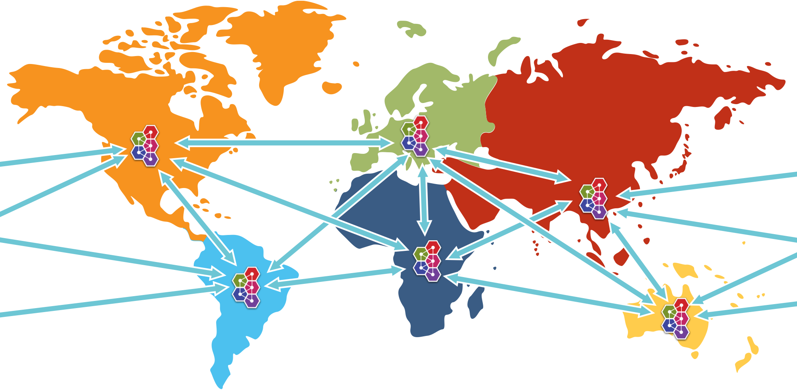

Federation
Introduction
Federation allows transmission of messages between brokers without requiring clustering.
A federated address can replicate messages published from an upstream address to a local address. n.b. This is only supported with multicast addresses.
A federated queue lets a local consumer receive messages from an upstream queue.
A broker can contain federated and local-only components - you don't need to federate everything if you don't want to.
Benefits
WAN
The source and target servers do not have to be in the same cluster which makes federation suitable for reliably sending messages from one cluster to another, for instance across a WAN, between cloud regions or there internet and where the connection may be unreliable.
Federation has built in resilience to failure so if the target server connection is lost, e.g. due to network failure, federation will retry connecting to the target until it comes back online. When it comes back online it will resume operation as normal.
Loose Coupling of Brokers
Federation can transmit messages between brokers (or clusters) in different administrative domains:
- they may have different configuration, users and setup;
- they may run on different versions of ActiveMQ Artemis
Dynamic and Selective
Federation is applied by policies, that match address and queue names, and then apply.
This means that federation can dynamically be applied as queues or addresses are added and removed, without needing to hard configure each and every one.
Like wise policies are selective, in that they apply with multiple include and exclude matches.
Mutliple policies can applied directly to multiple upstreams, as well policies can be grouped into policy sets and then applied to upstreams to make managing easier.
Address Federation
Address federation is like full multicast over the connected brokers, in that every message sent to address on Broker-A will be delivered to every queue on that broker, but like wise will be delivered to Broker-B and all attached queues there.
 Figure 1. Address Federation
Figure 1. Address Federation
For further details please goto Address Federation.
Queue Federation
Effectively, all federated queues act as a single logical queue, with multiple receivers on multiple machines. So federated queues can be used for load balancing. Typically if the brokers are in the same AZ you would look to cluster them, the advantage of queue federation is that it does not require clustering so is suitable for over WAN, cross-region, on-off prem.
 Figure 2. Queue Federation
Figure 2. Queue Federation
For further details please goto Queue Federation.
WAN Full Mesh
With federation it is possible to provide a WAN mesh of brokers, replicating with Address Federation or routing and load balancing with Queue Federation.
Linking producers and consumers distant from each other.
 Figure 3. Example possible full federation mesh
Configuring Federation
Federation is configured in broker.xml.
Sample:
<federations>
<federation name="eu-north-1-federation">
<upstream name="eu-west-1" user="westuser" password="32a10275cf4ab4e9">
<static-connectors>
<connector-ref>connector1</connector-ref>
</static-connectors>
<policy ref="policySetA"/>
</upstream>
<upstream name="eu-east-1" user="eastuser" password="32a10275cf4ab4e9">
<discovery-group-ref discovery-group-name="ue-west-dg"/>
<policy ref="policySetA"/>
</upstream>
<policy-set name="policySetA">
<policy ref="address-federation" />
<policy ref="queue-federation" />
</policy-set>
<queue-policy name="queue-federation" >
<exclude queue-match="federated_queue" address-match="#" />
</queue-policy>
<address-policy name="address-federation" >
<include address-match="federated_address" />
</address-policy>
</federation>
</federations>
In the above example we have shown the basic key parameters needed to configure federation for a queue and address to multiple upstream.
The example shows a broker eu-north-1 connecting to two upstream brokers eu-east-1 and eu-west-1,
and applying queue federation to queue federated_queue , and also applying address federation to federated_address.
It is important that federation name is globally unique.
There are many configuration options that you can apply these are detailed in the individual docs for Address Federation and Queue Federation.
Note:
Extra parameters from the URI of a connector-ref can be used to override or provide additional configuration to the ServiceLocator.
Large Messages
If Federation has to process large messages, the default ackBatchSize and consumerWindowSize for the consumer will need to be changed
to limit the number of in-flight messages and to enable large message flow.
These options can be supplied as parameters on the referenced connector URI, for example:
tcp://<host>:<port>?ackBatchSize=100&consumerWindowSize=-1